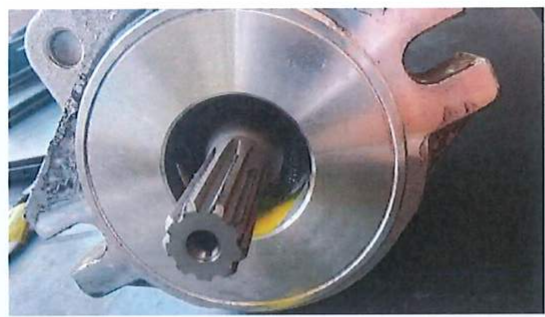
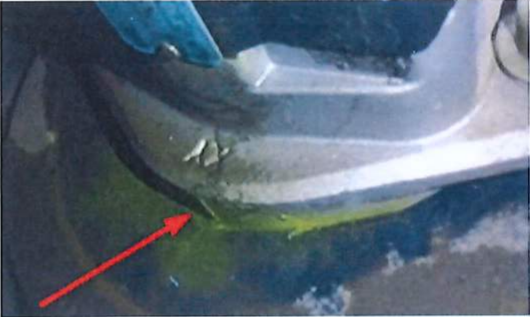
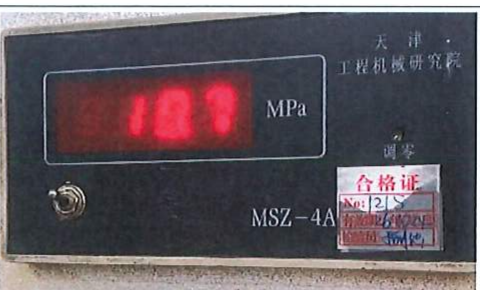
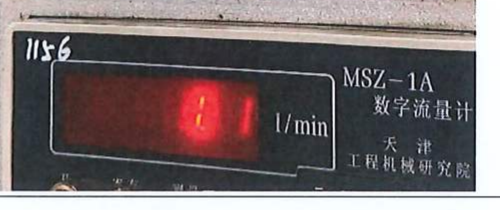
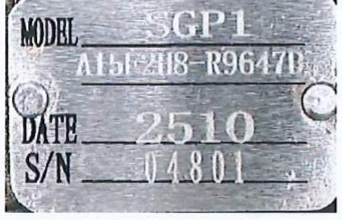
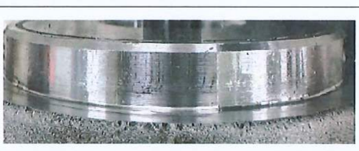
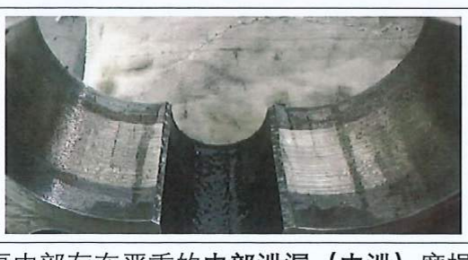

Analysis Report on Wacker Neuson Gear Pump
TSQR-0586
2026-6-29
Prepared by: Wang Kuan
Approved by:
Wacker Neuson Company:
Customer feedback failure mode: Gear pump oil leakage


I. Background Overview
Our company received your feedback that this gear pump had an oil leakage failure.
To determine the root cause, we conducted systematic inspection and analysis of the
returned unit immediately upon receipt. After preliminary visual inspection and
various performance retests, we found that the test results differ significantly from
the failure symptoms reported by the customer. Details are as follows.
II. Inspection Methods and Process
-
Preliminary visual inspection:
Inspection of the pump body surface found no obvious impact damage, sand holes,
or scratches on sealing / mating faces.
Abnormal eccentric wear marks were found on the mounting register (pilot).
-
Airtightness test (core reproduction item):
Performed according to the standard work instruction. Observation: no abnormal condition.
-
Performance retest:
Retested at rated pressure to measure the output flow of this gear pump.
III. Test Results and Data Analysis
| Test Item |
Standard / Requirement |
Actual Retest Result |
Conclusion |
Airtightness
(leakage reproduction) |
Extend pressure hold 3 min;
no leakage |
No leak point found
(hold pressure stable; no drop) |
Inconsistent with customer feedback of “oil leakage” |
| Test Item |
Standard / Requirement |
Actual Retest Result |
Conclusion |
| Flow confirmation |
19.2–21.4 L/min |
Essentially no flow |
Fail |
On-site Test Status:
Test bench flow confirmation:
This gear pump cannot meet the test condition: 17.2 MPa
→ The factory test bench can no longer build up pressure.


Key Contradiction Analysis:
Retest results show that the flow rate is significantly lower than the rated value.
IV. Disassembly Analysis
| No. |
Returned Unit Condition |
Description |
| 1 |
 |
Nameplate information:
Model: SGP1-R9647D (15CC)
Production date: October 2025
Product No.: 04801
|
| 2 |
 |
Eccentric wear marks on the mounting register (pilot) |
| 3 |
 |
Gear pump disassembly: secondary scoring / “bore sweeping” of the intermediate body → internal leakage
|
This indicates severe internal leakage (internal leak) wear inside the pump.
However, the airtightness test did not find any external leakage (external leak).
IV. Analysis of Discrepancy Between Reported Failure and Test Results
Based on the contradictory phenomenon of “low flow but no external leakage” described above,
our analysis is as follows:
-
There is a difference between the fault operating condition and the static test → no oil leakage phenomenon.
-
Root cause inference (key point):
Severely low flow with no external leakage is typical of internal pump wear.
Eccentric wear marks appear on the mounting register; it is inferred that this gear pump was subjected to radial force,
causing secondary internal bore sweeping, which resulted in “no flow” during the return-to-factory test.
-
The “oil leakage” reported by your company may involve a “misjudgment,” or there may be other “causes.”
V. Conclusion
-
Current product status:
After retesting by our company, the pump currently passes airtightness (no external leakage),
but fails performance (flow).
-
Cross-check against customer feedback:
The current product status (low flow) is completely inconsistent with your earlier feedback that
“no abnormal operating condition was found.”
The customer’s statement of “oil leakage despite no abnormal operating condition” is logically
contradictory to our measured “severe internal leakage (insufficient performance).”
-
Recommended determination:
The possibility of on-site misjudgment or inaccurate description of operating conditions cannot be ruled out.
The root failure mode of this pump is internal wear, rather than simple external seal failure.
The above.
Best regards,
Tianjin Shimadzu Hydraulic Co., Ltd.
Quality Assurance Department